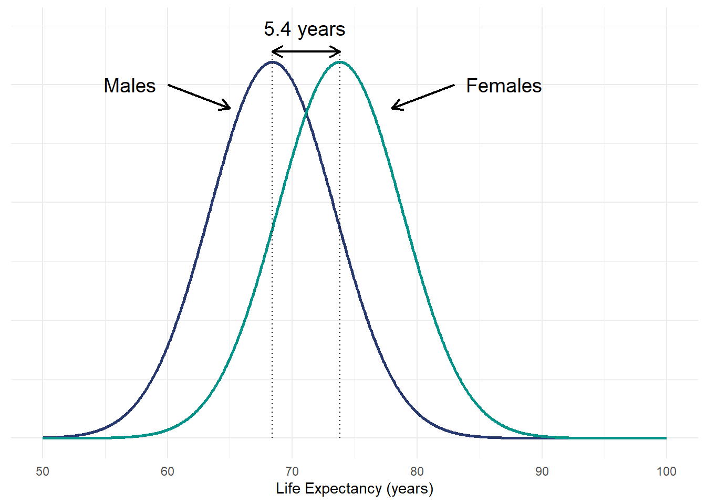
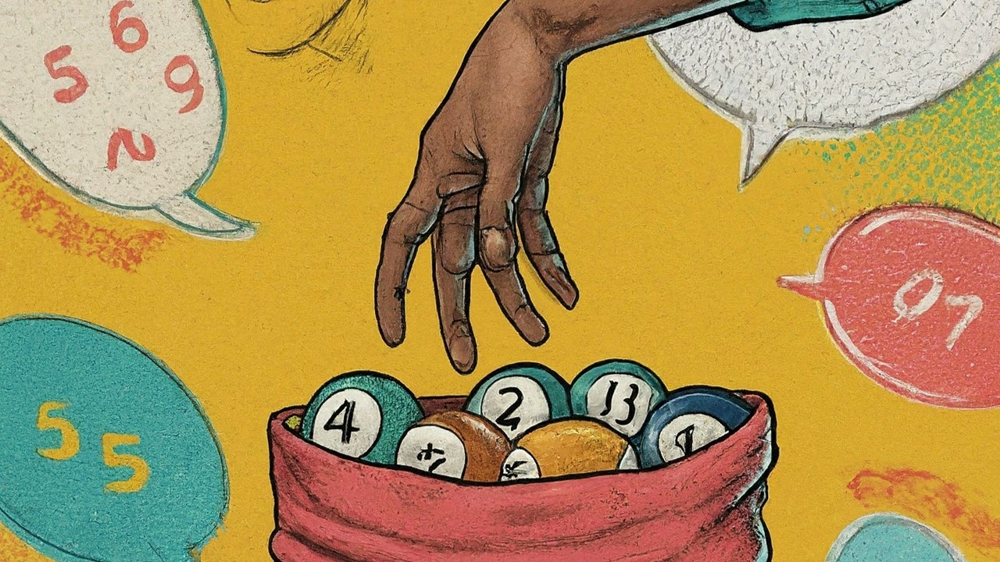
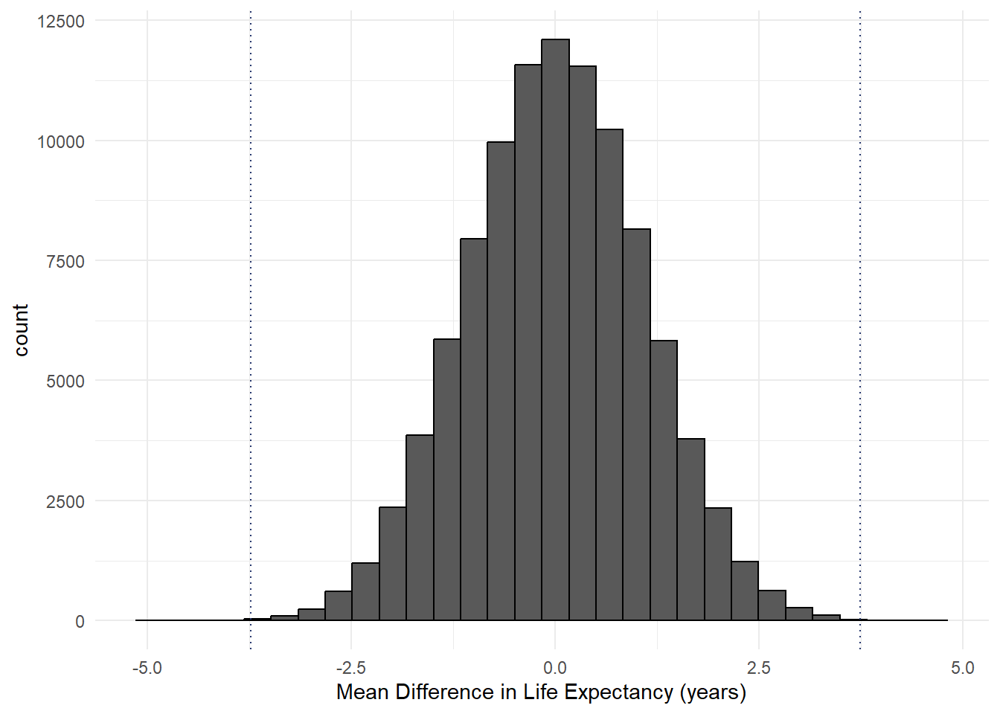

P values are often generated in statistical tests and used to aid statistical inference. This blog post presents how we can use resampling statistics through permutation tests to calculate p values. In addition, the blog post also aims to help us better understand p values through such approach.

P Values and Null Hypothesis Significance Testing
Falsifiability is the heart of science. According to well-known philosopher, Karl Popper, inference about the world can only be made through refuting evidence. A classic example is that observation of a black swan falsifies the hypothesis that all swans are white.
Popper’s falsification theory forms the basis of the famous null hypothesis significance testing (NHST) paradigm. Such a paradigm and p values, which are commonly taught in today’s statistics class, are popularised by Sir Ronald Aylmer Fisher in the early 1900s. Under such paradigm, statistical inference is made by testing the null hypothesis. P values help us to determine whether to reject or fail to reject the null hypothesis.
P value is defined as the probability of obtaining an effect or estimate equal to or more extreme than the one observed assuming the null hypothesis is true. A common misconception of p value is that it is the probability of a result occurrence due to random chance. More accurately, it is the conditional probability of a result occurrence due to random chance under the assumption that the null hypothesis is true. The latter part of the sentence is a critical component in the interpretation of a p value. This blog post illustrates this understanding of p values through the use of permutation tests.
Note
The null hypothesis is always assumed to be true under a null hypothesis significance testing (NHST) paradigm.
A T-test Example
Let’s illustrate this using a simple example of comparing two means based on a t-test. According to Our World in Data, women tend to live longer than men. It was suggested that the average life expectancy of women and men was 73.8 years and 68.4 years, respectively. Assuming a Gaussian distribution and similar variance, the figure below presents the life expectancy distribution of both gender groups.
Research Question
Does the life expectancy differ between men and women?
In this example, we are interested to find out whether the life expectancy differs between the two gender groups. We can make inference by testing the null hypothesis that the life expectancy does not differ between males and females. To test our hypothesis, let’s assume that we collect 50 life expectancy records from each gender group. The table below shows a subset of the data used for this example. This is simulated through random sampling from a specified normal distribution. Unfold the code below to see the reproducible code for the resultant data set.
Code
# Set seed for reproducibility
set.seed(123)
# Simulate 50 observations for each gender
sim_df <- data.frame("Male" = rnorm(50, 68.4, 5) + rnorm(50,5,2),
"Female" = rnorm(50, 73.8, 5)+ rnorm(50,5,2))|>
pivot_longer(cols = c("Male", "Female"), names_to = "gender", values_to = "life_expectancy")
# Browse data
library(gt)
sim_df|>
head(10)|>
gt()|>
cols_label(gender = "Gender",
life_expectancy = "Life Expectancy (years)")|>
cols_align(
align = "center"
)| Gender | Life Expectancy (years) |
|---|---|
| Male | 71.10426 |
| Female | 76.82344 |
| Male | 72.19202 |
| Female | 81.62250 |
| Male | 81.10780 |
| Female | 78.23095 |
| Male | 76.48975 |
| Female | 75.04553 |
| Male | 73.59490 |
| Female | 73.80300 |
We can answer our research question by comparing the mean life expectancy values between both gender groups. Based on our simulated sample data, the mean life expectancy for women and men is 77.6 years and 73.9 years, respectively. The difference in means for our sample was 3.74 years. Assuming a significance level of 0.05, performing a t-test (see output below) reveals that this observed difference is statistically significant, as indicated by the p value of 0.0003902.
t.test(life_expectancy ~ gender, data = sim_df)
Welch Two Sample t-test
data: life_expectancy by gender
t = 3.674, df = 97.508, p-value = 0.0003902
alternative hypothesis: true difference in means between group Female and group Male is not equal to 0
95 percent confidence interval:
1.721278 5.765276
sample estimates:
mean in group Female mean in group Male
77.60811 73.86483 We understand from the definition of p value above that this p value means that there is a 0.039% probability of observing a mean difference of 3.74 years or greater by random chance under the assumption that the null hypothesis is true.
What do we actually mean by random chance assuming that the null hypothesis is true?
Based on a frequentist perspective, this means that if we conduct the same experiment repeatedly many times and considering that the null hypothesis is true, a p value of 0.00039 suggests that we are likely to observe a mean difference of 3.74 years or greater in 39 out of 100,000 trials.
Resampling with Permutation Test
Realistically, the likelihood of an experiment being conducted for a large number of repetitions is very low due to limited time and resources. Thus, it is interesting to understand the interpretation of p values from a resampling approach.
A permutation test, also known as re-randomization or shuffle test, is a statistical method to assess the significance of an observed result by repeated permuting or shuffling the values of the observed data. Specifically, it resamples the data assuming the null hypothesis is true.
In the context of the above example on comparing two means, if the null hypothesis is true, there would be no expected difference in the mean life expectancy between males and females. In other words, we think that the data comes from the same population distribution and gender does not influence the data observed. Under this assumption, the gender labeling of data is exchangeable. If the null hypothesis is true, randomly allocating gender groups to our observed data should yield a similar or more extreme result as compared to our observed mean difference.
A permutation test is thus simply shuffling and randomly re-assigning the group labels to our data followed by repeating the statistical test of interest to compare the results. The code below is an example of how we can randomly assign the gender labels with the sample function. The table below is similar to the table above, except that we have a new column with the new randomly allocated gender labels in which some differ from the original labels.
# Create a list of gender labels for random sampling
randomisation_list <- rep(c("Male","Female"), 50)
# Set seed for reproducibility
set.seed(123)
# Create a new column for randomly allocated gender groups
resample_df <- sim_df|>
mutate(sim_gender = sample(randomisation_list))| Gender | Randomly Allocated Gender |
Life Expectancy (years) |
|---|---|---|
| Male | Male | 71.10426 |
| Female | Male | 76.82344 |
| Male | Male | 72.19202 |
| Female | Female | 81.62250 |
| Male | Male | 81.10780 |
| Female | Female | 78.23095 |
| Male | Female | 76.48975 |
| Female | Male | 75.04553 |
| Male | Male | 73.59490 |
| Female | Male | 73.80300 |
Next, we re-run the t-test comparing the mean values between our newly allocated gender groups. The test output below tells us that the new mean life expectancy for women and men is 75.54 years and 75.94 years, respectively. Interestingly, in contrast to our initial result, the random allocation of gender groups results in the mean life expectancy of females being lower than males by 0.40 years. The estimate is also much smaller than the observed mean difference of 3.74 years.
t.test(life_expectancy ~ sim_gender, data = resample_df)
Welch Two Sample t-test
data: life_expectancy by sim_gender
t = -0.37003, df = 97.422, p-value = 0.7122
alternative hypothesis: true difference in means between group Female and group Male is not equal to 0
95 percent confidence interval:
-2.557128 1.753435
sample estimates:
mean in group Female mean in group Male
75.53555 75.93740 Our initial t-test result suggests that there is strong evidence against the null hypothesis given the observed data. As mentioned above, if the null hypothesis is indeed true, we would only expect to observe a mean difference of 3.74 years or greater in a very small proportion of the trials. Approximately 39 out of 100,000 trials. Let’s test whether this is true with a simulation of such resampling methods with the use of for-loop to repeat what we did above. A gentle warning that this takes a while given the large number of trials.
# Set seed for reproducibility
set.seed(123)
# Create a dataframe to store the simulation results
result_df <- data.frame('Simulation' = seq(1:100000),
"Estimate" = NA)
# Simulation of resampling and performing a t-test
for (i in 1:100000){
resample_df <- sim_df|>
mutate(sim_gender = sample(randomisation_list))
# Store the t-test results in a dataframe
sim_result <- broom::tidy(t.test(life_expectancy ~ sim_gender, data = resample_df))
# Extracting the mean difference estimate
sim_estimate <- sim_result$estimate[1]
# Storing the estimate
result_df$Estimate[i] = sim_estimate
}This repetitive resampling approach generates a sampling distribution. In the context of this example, we can find out distribution of the mean differences in life expectancy between both gender groups. The histogram below presents the distribution of mean differences for our simulation. Positive values indicate greater mean life expectancy in females as compared to males, and vice versa. The figure shows that over 100,000 trials, random allocation of gender groups results in majority of mean differences in close proximity to zero.

It is important to note that this sampling distribution represents the distribution of estimates assuming the null hypothesis is true. Thus, if we are interested to calculate the p value for our observed mean difference, we may just simply calculate the proportion of estimates that are equal to 3.74 or greater.
The dotted lines on the figure above represent the magnitude of our observed mean difference (i.e., -3.74 and 3.74). In agreement with our expectations, the histogram clearly indicates that the likelihood of observing a mean difference of such magnitude is very low.
The output below tells us that the resultant proportion of absolute mean differences of at least 3.74 is 43 out of 100,000 observations. This represents a p value of 0.00043, which is pretty close to our original p value derived from the t-test. This highlights the validity of such resampling approach.
result_df|>
filter(abs(Estimate) >= 3.74)|>
count() n
1 43The p value above was computed for a two-tailed test as we are calculating the proportion from both ends of the histogram. We can also calculate the p value for one-sided test easily. For example, we are interested to know whether the life expectancy of females is greater than men specifically. In this case, we are only interested in the tail on the right side of the histogram above. The p value can be computed by calculating the proportion of observed positive mean differences of at 3.74 or greater. This results in a lower p value of 0.0002.
result_df|>
filter(Estimate >= 3.74)|>
count() n
1 20Round-Up
This blog post presents how we can use a resampling approach such as the permutation test to calculate p values. P values are not just magical outputs from a statistical test. It is possible to compute them ‘manually’ through simulations such as the example above. This permutation test approach to compute p values is not only limited to comparison of means, and can be applied to almost any statistical test (e.g., medians, correlation coefficients).
Personally, I find this approach helps me to better understand the definition of a p value in two ways. First, the act of reshuffling and randomly re-allocating the group labels illustrates the notion of assuming that the null hypothesis is true. Second, simulating the resampling for a large number of trials helps us to understand the meaning of a p value from a frequentist perspective.
I hope you find this useful as well!